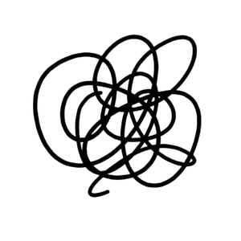
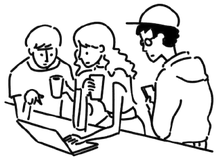
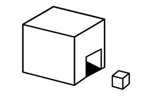
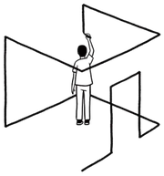
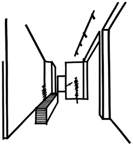
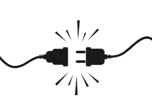
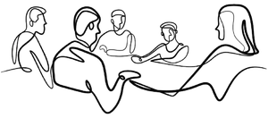

Disoriented

Familiar Teams

Unsettled

Comfort in unknown

Displaced
Different Spatial Experience

Disconnected

Existing Team Dynamics

Breaking Away from the Established Experience
& now the challenge at hand is how do we bring in people from two existing locations together.
Opening the Way to What’s Next
& the solution to create A protection destination where people can have a continuous experience
One Place One ExperienceCopy 0 · as today
Lost
Familiar teams
Unsettled
Ease in the new
Uprooted
Fresh spaces
Cut off
Teams kept whole
Leaving the familiar
Two locations. One team to bring together.
What we build
A protection destination that feels continuous.
One Place. One Experience.Copy 1 of 4 · Tight
Disoriented
Familiar faces
Unsettled
At ease
Displaced
New spaces
Disconnected
Same bonds
The question
How do two locations become one?
The answer
One protection destination, one continuous experience.
One Place. One Experience.Copy 2 of 4 · Question → answer
“Where do I go?”
Teams together
“Will I fit?”
Easy to find
“Where’s my desk?”
Room to explore
“Where’s my team?”
Same rhythm
It’s not a move
Moving offices is easy. Moving people isn’t.
So we design
A place that already feels like home.
One Place. One Experience.Copy 3 of 4 · People first
Lost
Familiar
Uneasy
At ease
Uprooted
Explore
Apart
Together
Today
Two places. One team.
Tomorrow
One place. One experience.
Copy 4 of 4 · Three-word beats